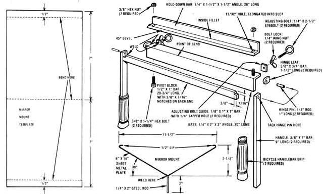

LEFT TO RIGHT: Grip the gadget's base in the jaws of a vise, and slip a sheet metal ""blank"" into the brake as shown. Make your first two bends, then line up your scribe mark with the hold-down bar's beveled edge for the third. Now just snug down the hex nuts and lift up the handles...your final bend is complete!